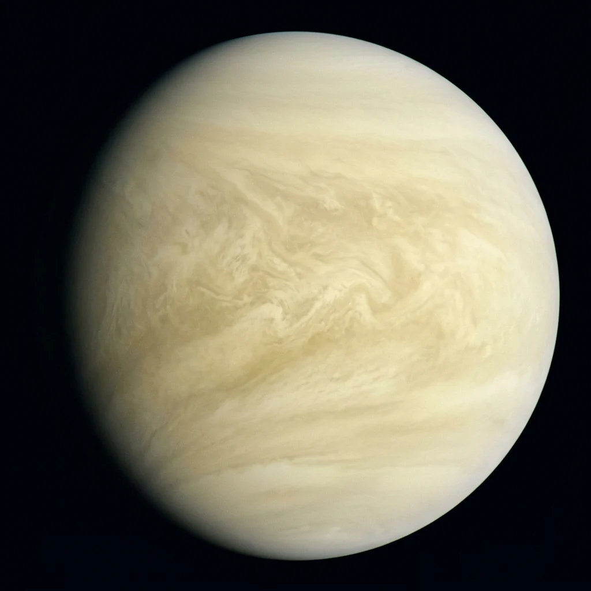

Foundational STEAM lesson for Venus.
Venus is often called Earth's twin due to its similar size and mass, but it suffered a runaway greenhouse effect. Shrouded beneath unbroken cloud decks of concentrated sulfuric acid, its carbon dioxide atmosphere produces crushing surface pressures 92 times Earth's and furnace temperatures of 465°C (870°F).
